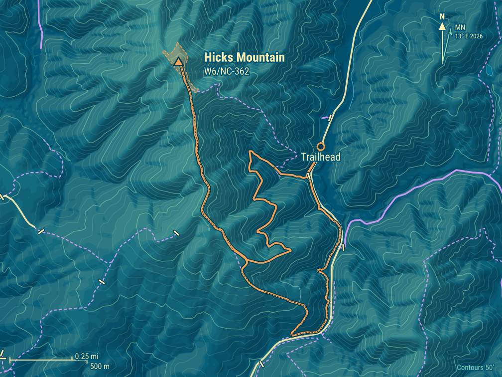
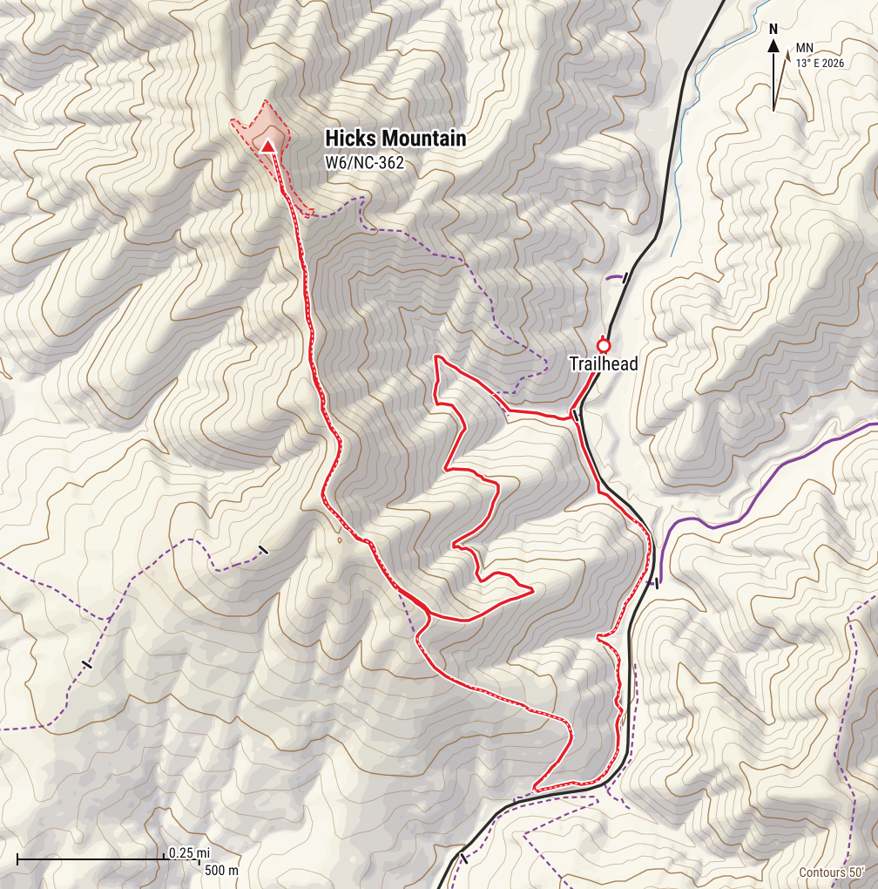
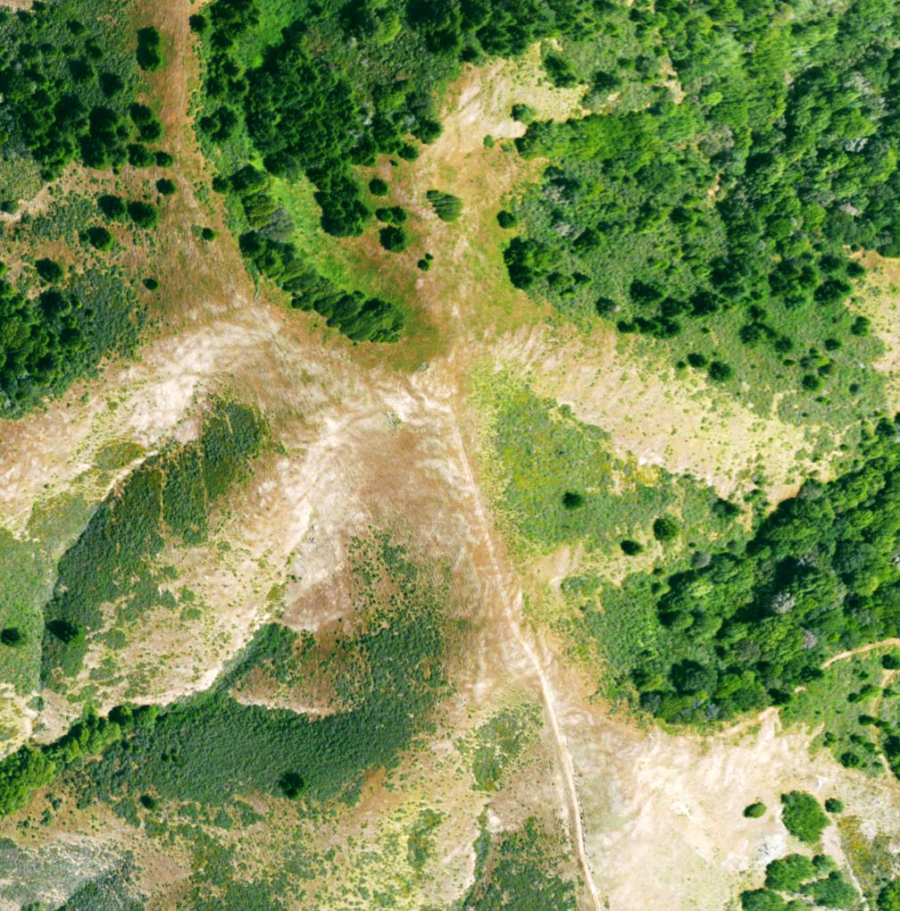
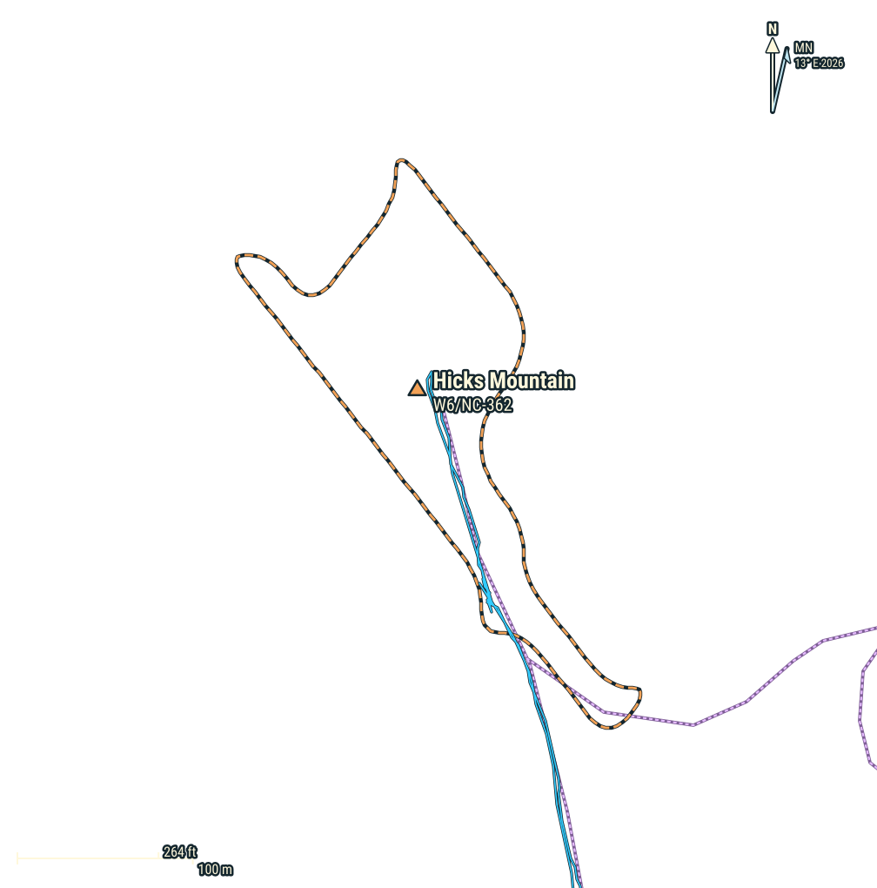
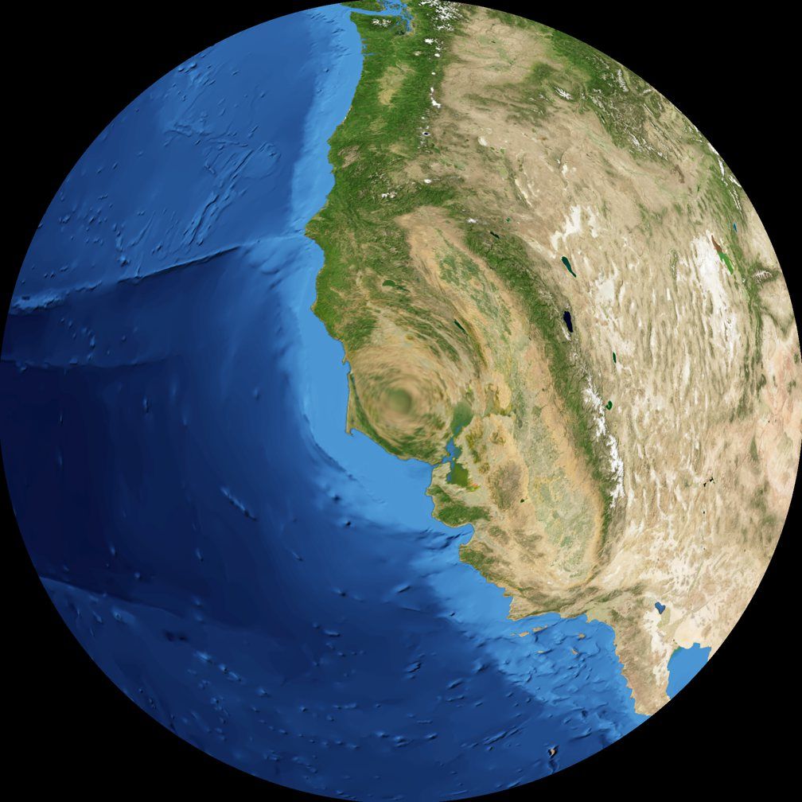
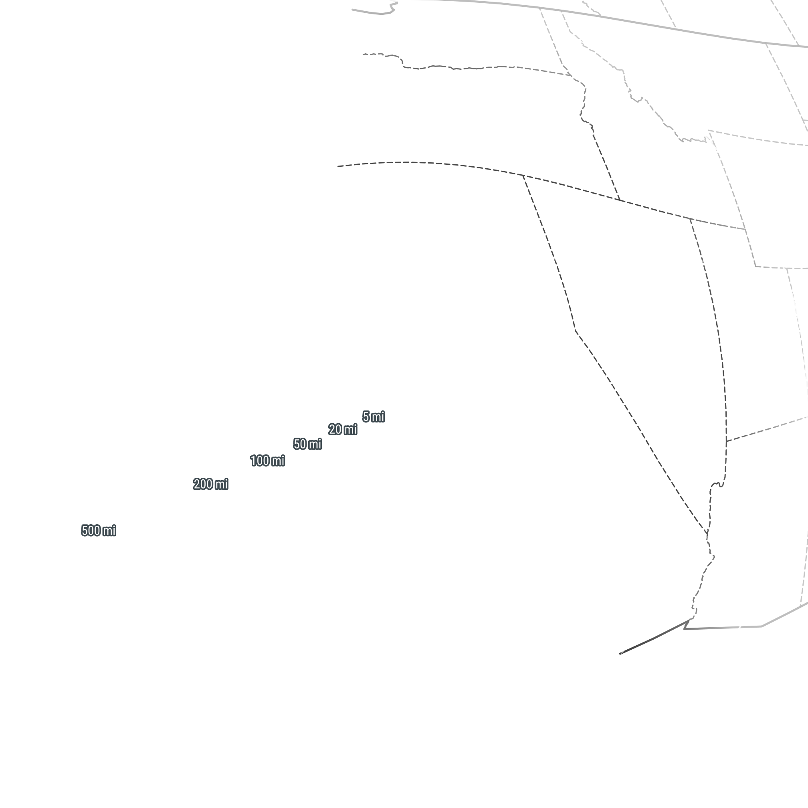

Hicks Mountain W6/NC-362
Summit
- Summit
- W6/NC-362 · Peakbagger
- Points
- 1
- First activation
- AJ6X, 25 September 2026
- Elevation
- 1,532′ (467 m)
- Prominence
- 985′ (300 m)
- Isolation
- 5.0 mi (8.1 km)
- Region
- Northern Coastal Ranges
- County
- Marin, California
- Grid
- CM88pd
- Land
- Private
- Wilderness
- None
- POTA park
- None
Route and radio
- Trailhead
- Hicks Mountain Belvedere Ranch, 450′ (137 m)
- Access
- Paved road
- Red tape
- Private ranch, only on MALT hikes; free, $30 donation suggested
- Round trip
- 4.6 mi (7.4 km), 3 h
- Elevation gain
- 1,400′ (427 m)
- Transport
- Hiking, Class 1
- Cell service
- Top: Verizon good; T-Mobile fair · way up: from 900′
- Towers, power lines
- tower 1.3 km NE; power line 953 m W
RF nearby: 929 licensed stations within 30 km
What to bring, the cheapest radio that still works here, on the AJ6X RF scale: HF: rung 1 of 4, uSDX or QMX, about $150: anything works. VHF: rung 1 of 4, Baofeng, about $25: anything works.
| Station | Service | Frequency | ERP | Where | Terrain | dBµV/m |
|---|---|---|---|---|---|---|
| KNKA274 | cellular | 824–890 MHz | 141 W | 1.3 km NE | in sight | 96 |
| KDG801 | public safety | 46.12–46.5 MHz | 240 W | 1.9 km NE | in sight | 95 |
| KCBS | AM radio | 740 kHz | 50 kW | 17.2 km E | −8 dB | 94 |
| WNGM656 | business radio | 462.8 MHz | 2.8 kW | 13.2 km SE | in sight | 89 |
| WPPV514 | public safety | 489.913 MHz | 1 kW | 11.7 km E | in sight | 86 |
| WIM379 | public safety | 490.938 MHz | 1 kW | 11.7 km E | in sight | 86 |
| KNKJ371 | paging | 931.163 MHz | 1.09 kW | 13.2 km SE | in sight | 85 |
| WPPV514 | public safety | 489.913 MHz | 1 kW | 13.2 km SE | in sight | 84 |
| WIM336 | public safety | 484.137 MHz | 1 kW | 13.2 km SE | in sight | 84 |
| WIM379 | public safety | 490.938 MHz | 1 kW | 13.2 km SE | in sight | 84 |
| WIM383 | business radio | 490.738 MHz | 1 kW | 13.2 km SE | in sight | 84 |
| WQDH206 | business radio | 483.438 MHz | 1 kW | 13.2 km SE | in sight | 84 |
Field strength at the summit from each station's power and distance, less an estimate of the terrain in between. A rough guide, by a rung either way: antenna patterns aren't known, and the noise from a site's equipment is in no licence. Data: FCC licences (2026-10-24), NOAA Weather Radio, OpenStreetMap.
Further down: Map · Aerial photo · QSO map · Log
Hicks Mountain sits above Hicks Valley in West Marin, between Nicasio and Petaluma. It’s all private ranch land: grassy ridges, oak and bay woods lower down, and great views from the top. That’s why nobody had ever activated it, even though it’s been a SOTA summit since 2012.
About a year ago, my friend Tony KM6AM told me about the hikes of the Marin Agricultural Land Trust (MALT), which were opening up private Marin summits that had never been open to the public. That’s how I activated nearby Black Mountain earlier this year. Just days before MALT’s Hicks Mountain hike, I noticed it was a SOTA summit too. Saturday was already full, but I got a spot on Friday. Tough luck for the kids (KO6MFO and KO6MFP), who usually come along and would have loved this one! Instead they had to stay in school. Hopefully next time.
The ranch
The ranch is 344 acres on the steep east side of the mountain, next to the Marin French Cheese Company. The Corda family has been farming here for over 100 years, and today the Dellingers, part of the same family, run it. They’re best known for Hicks Mountain Hens, pasture-raised eggs that started as Bill Dellinger’s 4-H project when he was a kid, sold at an honor-system farm stand by the road. There are also goats for brush grazing, plus beef and honey. The land itself has redwoods, thick chaparral, and lots of little microclimates, each with its own plants and wildlife.
In 2024 MALT put an agricultural conservation easement on the ranch ($800,000: half from a Marin County Measure A grant, half from MALT donors), so it stays a working ranch and can never be subdivided or developed. It adjoins 14,226 acres of MALT-protected land, together one of the largest protected areas in the Bay Area. And according to MALT, the summit is the highest privately owned peak in Marin County. (MALT: Hicks Mountain Belvedere Ranch)
A few words about MALT. It was founded in 1980 by Ellen Straus and Phyllis Faber, together with ranchers, environmentalists and community leaders, to protect Marin’s farms from development. It was the first farmland trust in the country! The idea is simple: MALT pays ranchers for a conservation easement, the family keeps the land and keeps farming, and the land can never be developed. So far that’s 59,028 acres and 99 farms, and other places have copied the idea. Since the land stays private, MALT’s hikes and events are the only way most of us get to see it, and they’re well worth a donation. (MALT: Mission & History)
Getting there
The ranch is open only for MALT events, as far as I know. My hike was on Friday, 25 September 2026, from 10 AM to 2 PM, with two options: a harder loop, about 4.5 miles and 1,000′ of climbing on trails and ranch roads, all the way to the top; or an easy walk, about ⅔ mile each way on a ranch road, to a shaded picnic area. You sign up on MALT’s events page (they fill up fast, then there’s a waitlist) and sign the liability waiver ahead of time. It’s free, with a suggested $30 donation. For the loop, MALT recommends hiking poles and shoes with good grip.
- When: whenever MALT holds the hike, hopefully again soon. If there’s a choice, go in a cooler season, since there’s little shade on the way up.
- Water: none available on the trail.
- Time: everyone has to be off the property by 2 PM, which doesn’t leave much time on top.
- Sun: the lower part of the hike has some tree cover, but once it gets steep it’s mostly exposed. On a warm day, slow down so you don’t overheat.
- Fog and wind: on other days it’s the opposite. The summit is about 1,500′, right where the marine layer often sits, and the wind sweeps across the high ridge. Bring a layer.
- Dogs and smoking: no dogs other than service animals, and no smoking: these are working ranches. (MALT’s event policies)
- Toilets: porta-potties at the start, nothing on the trail.
- Ticks: I haven’t seen any, but there may be some. Stick to the road and trail, and stay out of the grass.
- Radio: it’s someone’s ranch, and a busy hike. I didn’t ask for permission in advance, hoping that explaining it in person would work better than an email. On the way up I talked to the guides: what I was about to do, why, and how many radio operators would be thrilled to make their first ever contact with this newly opened summit.
Trailhead
The ranch entrance is on Point Reyes–Petaluma Road, by the farm stand, at about 450′. Parking is very limited, so MALT asks everyone to carpool.
After dropping off the kids at school, I had a long and slow drive through Bay Area traffic and arrived 10 minutes late. Everything was well organized: people in safety vests directing traffic, and parking in the field by the entrance. Then I joined the briefing and checked in. We were reminded there is no water on the way up, and that we needed to be off the property by 2 PM.
The way up
My GPS says 2.4 miles and 1,190′ to the top, and 1,400′ of climbing for the whole loop, a bit more than MALT’s number.
The first part of the trail is just above the public road; then it turns right and starts climbing steeply. Lots of people, soon spread out by pace, with several guides leading or walking along. It was a warm, sunny day with no wind: some tree cover lower down, then mostly exposed once the trail got steep, so I slowed down to keep from overheating.


Summit
The summit is a rounded, grassy knoll, with views in every direction when the fog stays away. It was very busy – not a good place to raise an antenna – so I went back down to the edge of the activation zone and set up by the side of the trail.

While I was setting up the antenna, someone came over asking nicely what I was doing, and if I was planning to take off paragliding from the mountain. She was relieved to hear I was only going on the air, and not in the air. It turned out she was the property owner!


Activation
25 September 2026 First activation
- Radio
- Elecraft KX2
- Antenna
- 40m EFHW
- Antenna support
- Carbon fiber mast, guyed with 3 ground spikes
- Power
- 5 W
- Activator
- AJ6X
- QSOs
- 6
- Bands
- 40m (6)
- Modes
- CW (6)
- On air
- 18:52–18:59 UTC
First activation of Hicks Mountain, and a race against the clock! Time was running short: 4 hours total, minus check-in and briefing, and the guides were planning to start down again soon to get everyone off the property by 2 PM. So setup, activation and teardown had to fit in 20 minutes flat, with no time to try anything but 40m CW. A quick Slack message about the first activation, a spot, and off I went, with only 7 minutes left for the activation itself. Got the 6 contacts (18:52 to 18:59 UTC), and had everything packed up just as the guide sweeping the rear arrived.
A reminder: on a guided hike, the time on top can be very short. Have everything ready to set up in a few minutes, and plan on one band and one mode.
And back
The way down starts the same way, then lower down the loop splits onto a different trail: shorter, steeper and a bit more shaded. If you walk the whole loop, this is the better order: the long, gentle way up, and the steep part on the way down.

On the way down I had a nice talk with the guide sweeping the rear, and then with a gentleman retired from IT who now enjoys hiking. I also had a long chat with the owner, Angela, about amateur radio, Summits On The Air, and my kids, who would have loved this hike. At some point someone mentioned that trespassers occasionally go up the mountain. I made sure to say that this is against the SOTA rules, and that activators were really excited to finally have a legal way up!
I was surprised to be the only radio operator on the Friday hike, and guessed that another SOTA activator would go up on Saturday. I guessed right: Mark KC8YEK activated it the next day!
All of us got a goodbye present from Hicks Mountain Hens: half a dozen eggs from the ranch! Bill Dellinger and Shelby Ronsheimer keep almost 1,000 hens on pasture, in a mobile coop they move to a new paddock every few weeks. Their farm stand by the road, next to Marin French Cheese, runs on the honor system and sells eggs, honey and butter, and you can see the hens from there. Worth a stop on the way to Point Reyes, hike or no hike.
Back at the car at 1:24 PM, then the long drive back through Bay Area traffic.
Map


Cell service, 4G, from the carriers' maps: good fair weak
Aerial photo


QSO map


Azimuthal equidistant, power 0.5 distance scale, out to 1,201 km, centred on the summit: every QSO is a straight line, true in direction. Chasers at their location on QRZ, to about 5 km; summit-to-summit contacts at the other summit. Rings: what the skimmers of the Reverse Beacon Network heard of our calls during the activations, each skimmer at the centre of its grid square (1 farther than the map reaches). Earth: NASA Blue Marble.
Log
25 September 2026 · 6 QSOs
| UTC | Call | Band | Mode |
|---|---|---|---|
| 18:52 | WU7H | 40m | CW |
| 18:53 | K6KM | 40m | CW |
| 18:54 | AG6AQ | 40m | CW |
| 18:56 | K6YK | 40m | CW |
| 18:58 | W7DLZ | 40m | CW |
| 18:59 | N7KOM | 40m | CW |